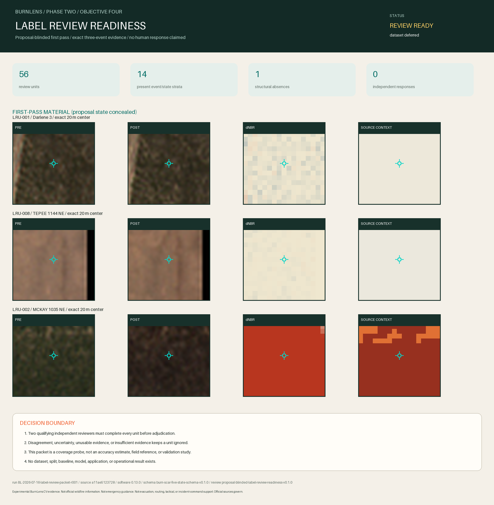

Experimental BurnLens CV evidence. Not official wildfire information. Not emergency guidance. Not evacuation, routing, tactical, or incident-command support. Official sources govern.

Decision
READY_FOR_INDEPENDENT_REVIEW_DEFER_DATASET
56 deterministic units cover every proposal state present across Darlene 3, Tepee, and McKay. The packet makes independent review executable, but no independent response or adjudication is supplied, so dataset candidacy remains deferred.
Review surfaces
Open proposal-blinded first pass / Open proposal reveal only after response lock / Blank response template / Blank adjudication template
Coverage
| Event | Proposal state | Population | Selected | Absent | Minimum separation |
|---|---|---|---|---|---|
| event-darlene3-or-2024 | background-candidate | 161,238 | 4 | no | 760 m |
| event-darlene3-or-2024 | burned | 18,543 | 4 | no | 620 m |
| event-darlene3-or-2024 | unknown | 71,897 | 4 | no | 4760 m |
| event-darlene3-or-2024 | excluded | 870 | 4 | no | 280 m |
| event-darlene3-or-2024 | review-needed | 17,452 | 4 | no | 1000 m |
| event-tepee-1144-ne-2018 | background-candidate | 494 | 4 | no | 240 m |
| event-tepee-1144-ne-2018 | burned | 92 | 4 | no | 200 m |
| event-tepee-1144-ne-2018 | unknown | 10,942 | 4 | no | 400 m |
| event-tepee-1144-ne-2018 | excluded | 16,025 | 4 | no | 780 m |
| event-tepee-1144-ne-2018 | review-needed | 16,322 | 4 | no | 500 m |
| event-mckay-1035-ne-2017 | background-candidate | 55 | 4 | no | 440 m |
| event-mckay-1035-ne-2017 | burned | 9,119 | 4 | no | 580 m |
| event-mckay-1035-ne-2017 | unknown | 7,483 | 4 | no | 600 m |
| event-mckay-1035-ne-2017 | excluded | 0 | 0 | yes | n/a |
| event-mckay-1035-ne-2017 | review-needed | 3,398 | 4 | no | 440 m |
Predeclared boundary
Before adjudication
- Two qualifying independent reviewers complete every selected unit.
- First-pass response files are immutable and hashed before proposal reveal.
- Every present candidate class in every event has completed evidence-sufficiency judgments.
Before dataset candidacy
- Every reviewer disagreement is resolved by a qualifying independent adjudicator or the unit remains ignored.
- Only units with sufficient or explicitly limited evidence and resolved binary agreement may support candidate labels.
- Uncertain, unusable, insufficient, source-conflicted, or unresolved units remain unknown, excluded, or review-needed.
- Any systematic event/class contradiction requires proposal-method revision and a new packet rather than threshold shopping.
- This bounded packet alone cannot establish statistical accuracy or field validation.
Research basis
- MTBS mapping methods: MTBS documents analyst interpretation, multitemporal imagery, scene-quality limits, and uncertainty.
- Stratification and sample allocation for reference burned area data: Predeclared stratification improves the efficiency and objectivity of burned-area reference sampling.
- Validation of the USGS Landsat Burned Area Essential Climate Variable: Independent analyst references and explicit agreement rules can reduce reference error.
- Reference Data Accuracy Impacts Burned Area Product Validation: Interpreter experience and low-severity ambiguity materially affect burned-area reference data.
The sources inform the protocol. They do not turn this bounded portfolio packet into a representative accuracy assessment.
Traceability and boundaries
Run: BL-2026-07-16-label-review-packet-r001
Git source: a11ae5123728d3823ba67d22d49250d4affb18f6
Software / review protocol / response schema: 0.13.0 / proposal-blinded-label-review-readiness-v0.1.0 / burnlens-label-review-response-v0.1.0
Dataset / split / baseline / model: none / none / none / none
- Not proven: No independent human review, inter-rater agreement, adjudication, accepted ground truth, or field validation has occurred.
- Not proven: The bounded sample is not a probability sample and supports no accuracy, generalization, or operational claim.
- Not proven: No dataset, split, baseline, model, application, deployment, official status, or endorsement exists.
Contains modified Copernicus Sentinel-2 data (2017, 2018, 2024), accessed through CDSE. Includes NIFC incident-reference context and MTBS reference from USGS/USDA Forest Service. No endorsement implied.